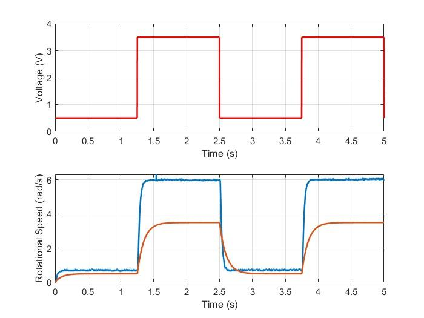
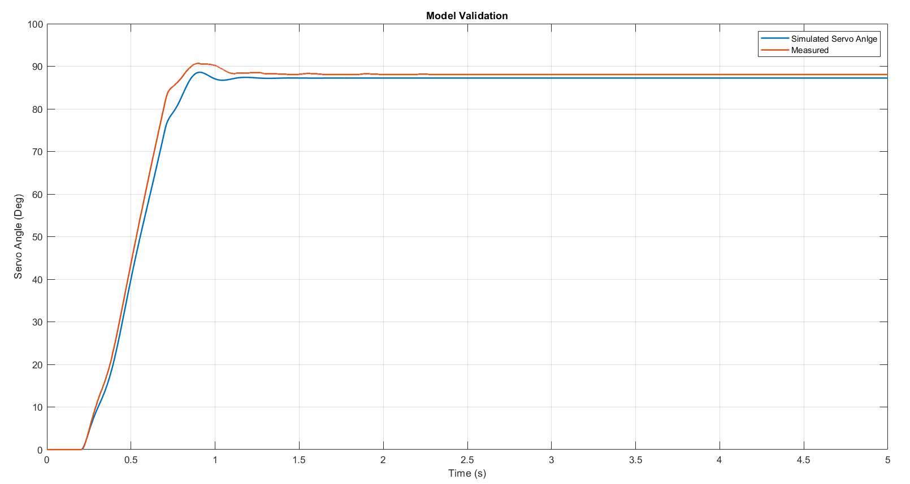

Dynamics & Control Lab
Experimental investigation of dynamic systems and closed-loop control design. Labs cover system identification, controller tuning, and performance evaluation of physical test rigs including motor-driven and electromechanical platforms. Results are compared against simulation models developed in MATLAB and Simulink.


